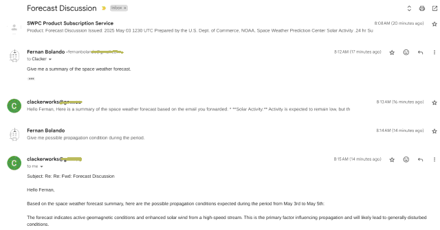

Selected Projects
Atari 600XL Memory Expansion
This work is a clone of the Atari 1064 Memory Expansion Unit, which increases the Atari 600XL's available memory from 16KB to 64KB.
A second version, utilizing a single CPLD for bank switching, expands the memory up to 128KB.
VOACAP ported to Plan9
Plan9 port of the FORTRAN program VOACAP.
Clacker Works BBS
Experimental Multi-User BBS with the following features:

Address: cw.qc.to 9000 or x22.ddns.net 9000
- Lines of Code:
- 10,739 lines of shell
- 523 lines of text
- 2,349 lines of C
- 56 lines of AWK
- 26 lines of Python
- Multi-User currently limited to 5 logins
- ATASCII (Atari) & PETSCII (C64) support
- Outgoing Calls to other BBS
- IRC chat interface
- Usenet Access (via i2np2.org)
- Local Messaging & Chat
- Amateur Radio Tools:
- Hourly Area Propagation
- WSPR activity monitoring
- Callsign skimmer
RP2040 Breakout Board
A breakout board for the RP2040, ordered via JLCPCB.
Multi-Source Raspberry Pi Power Board
A Pi-Hat allowing power input from various voltage sources above 5V, ordered via JLCPCB.
P1 - MQTT Linked Bot
An independent Wi-Fi module based robot controlled by MQTT.
LLMs everywhere
Since everybody and their cat has a wrapper for LLMs these days, here is mine doing an S-parameter review of a fictitious circuit.
2025-May-03: Giving an LLM its own email just made sense for getting things done. Now I email Snow to check the calendar, look at the task list, and pull in other context for responses.

Legacy Projects & Experiments
clacker works (ˈklak-ər ˌwərks) n.
1. A semi-secret development facility specializing in rapid prototyping and innovation in electromechanical engineering, often with a retro-futuristic or steampunk aesthetic.
Example: “The clacker works was rumored to be developing intricate clockwork mechanisms integrated with vacuum tube electronics.”
2. A methodology of engineering and development characterized by:
a. Rapid, iterative design.
b. Intricate mechanical systems integrated with electronics.
c. A raw, hands-on work environment filled with mechanical and electrical sounds.
d. Fusion of vintage and futuristic technology.
Example: “Their clacker works approach prioritized robust mechanical designs augmented by analog electronics.”
Etymology: Derived from clacker (referring to those who are proficient in programming Engines, in the works of Gibson-Sterling*) and Skunk Works* > (Lockheed Martin’s Advanced Development Programs, known for secretive and rapid innovation).
Related terms: electromechanical, steampunk, retro-futurism, analog computing.